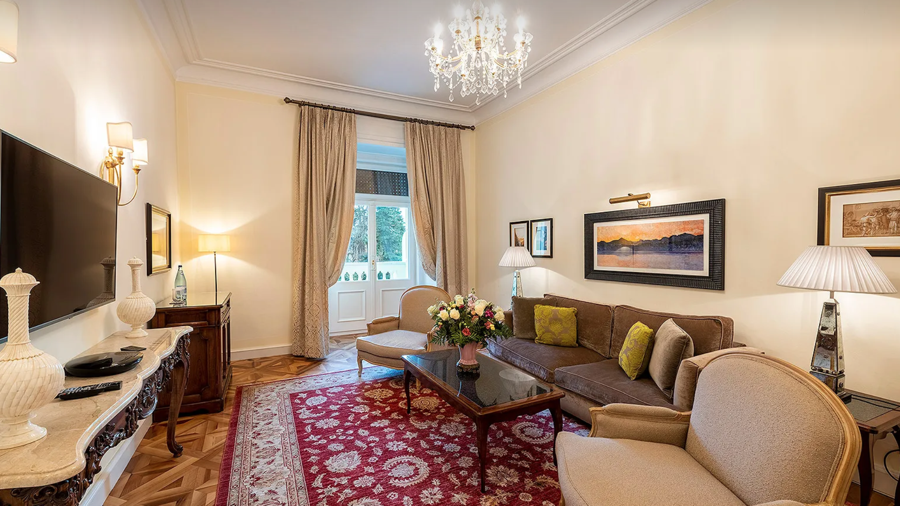
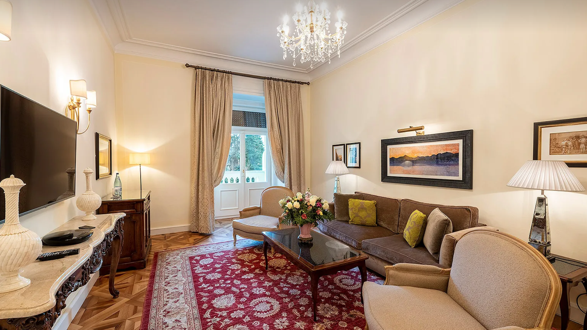

Palace Merano - изысканный отель города Мерано, где Вы сможете уделить время себе, погрузившись в райский уголок нетронутой природы и расслабляющую атмосферу отеля, способствующую восстановлению физического и ментального равновесия. Гостеприимная атмосфера отеля Палас Мерано и курс оздоровительных процедур подарят Вам незабываемый опыт и позволят восстановить гармонию, укрепить здоровье и обрести хорошее самочувствие, наслаждаясь пребыванием в отеле.
Философия отеля основана на принципах холистического подхода, принимая во внимание уникальность и индивидуальность каждого человека.
К размещению гостей представлены 99 номеров, 46 из которых - люксы, полулюксы и люксы в замке. Во всех номерах есть спутниковое телевидение с экраном на органических светодиодах и системой Sky, акустическая система Bose, сейф, Wi-Fi, телефон, минибар и кондиционер. Сотрудники отдела бронирования и ресепшн всегда в Вашем распоряжении, чтобы удовлетворить любые потребности и сделать Ваше пребывание как можно более приятным.
Comfort Double - 32 м2
Из окон двухместных номеров категории Comfort открывается вид на город Мерано
и природный заповедник горнoгo массивa Тесса.
Ванная комната, отделанная мраморной плиткой, оборудована обширной столешницей вокруг
раковины, ванной или душевой кабиной, туалетом и биде. Также предоставляются фен, тапочки и халат.
Park Superior - 30 м2
Из окон двухместных номеров Park Superior открывается вид на умиротворяющие пейзажи внутреннего парка.
Номера данной категории также оснащены балконом.
Ваннaя комнатa, отделаннaя мраморной плиткой, оборудованa обширной столешницей вокруг умывальника,
ванной или душевой кабиной, туалетoм и биде. Также предоставляются фен, тапочки и халат.
Park Deluxe - 35 м2
Из окон двухместных номеров Park Superior открывается вид на умиротворяющие пейзажи внутреннего парка.
Номера данной категории также оснащены балконом.
Ваннaя комнатa, отделаннaя мраморной плиткой, оборудованa обширной столешницей вокруг умывальника,
ванной или душевой кабиной, туалетoм и биде. Также предоставляются фен, тапочки и халат.
Comfort Junior Suite - 40 м2
Из окон полулюкса Comfort открывается вид на город Мерано и его окрестности, природный заповедник горнoгo массивa Тесса.
Номера различаются планировкой и площадью, внутреннее пространство которых разделено на гостиную зону и спальню.
Паркетное покрытие из натурального дерева подчеркивает изящный интерьер.
Ванная комната, отделанная мраморной плиткой, оборудована обширной столешницей вокруг раковины,
ванной или душевой кабиной, туалетом и биде. Также предоставляются фен, тапочки и халат.

Park Junior Suite - 40 м2
Из окон Park Deluxe Junior Suite открывается вид на живописные пейзажи внутреннего парка.
Номера данной категории оснащены балконом, внутреннее пространство разделено на гостиную зону и спальню.
Паркетное покрытие из натурального дерева подчеркивает изящный интерьер.
Ванная комната, отделанная мраморной плиткой, оборудована обширной столешницей вокруг раковины,
ванной или душевой кабиной, туалетом и биде. Также предоставляются фен, тапочки и халат.
Panorama Junior Suite - 35 м2
Окна Panorama Junior Suites выходят на Мерано и его окрестности, горный массив
Тесса и природный заповедник. Впечатляющим панорамным видом можно наслаждаться с террасы, являющейся частью номера.
Внутреннее пространство Panorama Junior Suites разделено на гостиную зону и спальню.
Паркетное покрытие из натурального дерева подчеркивает изящный интерьер.
Ванная комната, отделанная мраморной плиткой, оборудована обширной столешницей вокруг раковины,
ванной или душевой кабиной, туалетом и биде. Также предоставляются фен, тапочки и халат.
Palace Comfort Suite - 45 м2
Из окон люкса Comfort открывается вид на город Мерано и природный заповедник горнoгo массивa Тесса.
Номера различаются планировкой и площадью и оснащены отдельной просторной гостиной с письменным столом.
Паркетное покрытие из натурального дерева дополняет уютную атмосферу.
В отделанной мрамором ванной комнате раковину обрамляет широкая столешница, а также установлены
душевая кабина, биде и туалет. Кроме того, предоставляются фен, тапочки и халат.

Panorama Comfort Suite - 45 м2
Из просторных Panorama Comfort Suites, расположенных на шестом этаже, открывается
изумительный вид на город Мерано, его окрестности и горный массив Тесса.
Гости могут наслаждаться видом с террасы, которая является частью номера.
Номера различаются планировкой и площадью и оснащены отдельной просторной гостиной.
Паркетное покрытие из натурального дерева дополняет уютную атмосферу.
В отделанной мрамором ванной комнате установлены раковина, обрамлённая широкой столешницей,
ванна, душевая кабина , туалет и биде. Кроме того, предоставляются фен, тапочки и халат.
Panorama Park Superior Suite - 45 м2
Из люксов Panorama Park Superior, расположенных на шестом этаже, открывается
живописный вид на внутренний парк отеля Палас Мерано. Номер включает терассу, откуда гости в
полном умиротворении могут созерцать город и окресности. Номера различаются планировкой и площадью,
при этом везде есть отдельная гостинная, позволяющая гостям насладиться тишиной и покоем.
Паркетное покрытие из натурального дерева дополняет уютную атмосферу.
В отделанной мрамором ванной комнате установлены раковина, обрамлённая широкой столешницей,
ванна, душевая кабина , туалет и биде. Кроме того, предоставляются фен, тапочки и халат.
Palace Park Superior Suite - 45 м2
Из просторных люксов Park Superior открывается великолепный вид на внутренний парк и бассейн.
Гостинную отличают уют и простор. Интерьер Palace Park Superior Suite выполненный в теплых оттенках
и паркетное покрытие из натурального дерева создают особую обстановку, отличающуюся уютной атмосферой.
В отделанной мрамором ванной комнате установлены раковина, обрамлённая широкой столешницей,
душевая кабина, туалет и биде. Кроме того, предоставляются фен, тапочки и халат.
Panorama Park Deluxe Suite - 50 м2
Из люксов Panorama Park Deluxe, расположенных на шестом этаже, открывается
живописный вид на внутренний парк отеля. Номер включает терассу, откуда гости в полном
умиротворении могут созерцать город и окресности. Номера различаются планировкой и площадью,
при этом везде есть отдельная гостинная, позволяющая гостям насладиться тишиной и покоем.
Паркетное покрытие из натурального дерева дополняет уютную атмосферу.
В отделанной мрамором ванной комнате установлены раковина, обрамлённая широкой столешницей,
ванна, душевая кабина, туалет и биде. Кроме того, предоставляются фен, тапочки и халат.
Palace Park Deluxe Suite - 60 м2
Просторные люксы Park Deluxe оборудованы красивой открытой террасой с видом на парк и бассейн.
Расположенные на первом этаже, люксы располагают отдельной, весьма просторной гостинной.
Интерьер Palace Park Deluxe выполненный в теплых оттенках и паркетное покрытие из натурального
дерева подчеркивают общий шарм и создают особую уютную атмосферу.
В отделанной мрамором ванной комнате установлены раковина, обрамлённая широкой столешницей,
ванна, душевая кабина, туалет и биде.Кроме того, предоставляются фен, тапочки и халат.
 

Sissi Imperial Suite - 121 м2 (номер люкс с двумя отдельными спальнями)
Интерьер роcкошного люкса Sissi Imperial, расположенного на 4 этаже, площадью 86 м²,
выполнен в стиле австрийской императрицы Елизаветы. Номер состоит из трёх комнат: спальни,
столовой и отдельной гостиной с письменным столом ( дополнительная смежная комната,
в качестве второй спальни, может быть добавлена по запросу), - все необходимое для приятного отдыха и несравненного комфорта.
Прочувствуйте всю уникальность атмосферы: нежные пастельные тона, качественные материалы и изящный
узор текстиля способствуют полному расслаблению. Насладитесь видом на сад и бассейн – на фоне великолепного
города Мерано и окресностей.
Комфорт обеспечен тщательно продуманной обстановкой, куда входят телевизор на светодиодах, акустическая система Bose,
сейф, Wi-Fi, телефон, мини-бар и кондиционер.
В просторной ванной, отделанной мраморной плиткой, установлены вместительный гардероб,
ванна, двойная раковина, душ и туалет с биде.Также предоставляются фен, тапочки и халат.